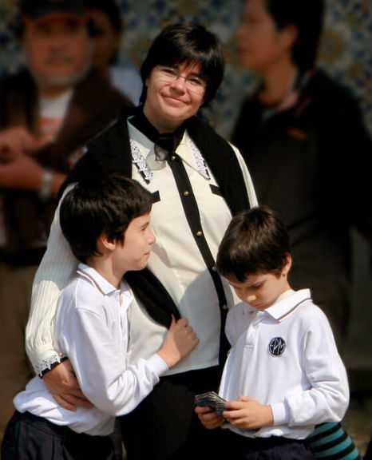
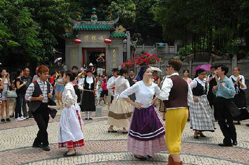
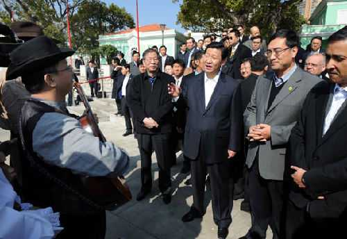
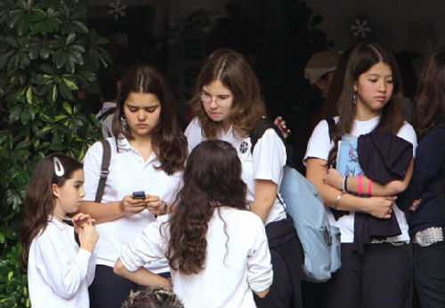
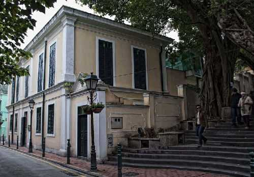
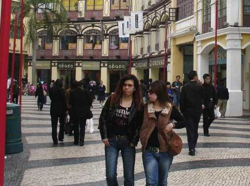
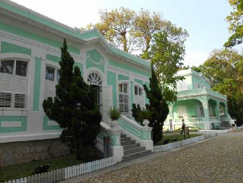

“土生葡人”这个称谓，对于居住在澳门的人来说，是一个再熟悉再亲切不过的称谓了。他是特指澳门社会中一个独特的居民群体，即葡萄牙人与亚洲人通婚后在澳门所生的混血后代。据官方公布的资料，澳门至今还有１万多土生葡人，占澳门总人口的２％。可以这么说，要想真正解读澳门今昔，没有比先了解土生葡人更直接更快捷了。因为土生葡人就是澳门开埠４００多年历史的产物，是澳门活的历史。按澳门学者的话说，土生葡人“乃中国、欧洲、以及整个东南亚沿海一带长期以来的互相接触和影响经过一个沉淀过程得出来的产物”，“乃两个文化历时几个世纪对话的产物”。
土生葡人的故事
记者来澳门不久，正好赶上澳门回归后第一次土生葡人社群聚会。我饶有兴趣地细细观察这些人的相貌特征。脸部长得像“西洋人”，但肤色却各异，黄皮肤、白皮肤、黑皮肤、灰黑皮肤都有。曾有学者把土生葡人当成“中葡混血儿”，其实，这只是其中一部分。就整个土生葡人来说，他们还包括葡萄牙人与印度人、马六甲人、日本人通婚后所生的混血儿，其中以葡萄牙人与印度人、马六甲人通婚的后裔居多，而葡人与中国人通婚的后裔只是极少数。
明朝嘉靖年间即16世纪中叶，拥有强大海上力量的葡萄牙人，自大西洋经印度洋到达南中国海，继续开辟贯通东西的新航道。在此过程中，遇到发达程度不同的文明和一个比一个强的对手。他们采取或结盟瓦解，或武力征服，或疏通合作等策略，扮演的角色也从探险者变成征服者，再变成商人。他们用了13年时间相继占领果阿和马六甲，面对强大的中国，又足足用了40年的时间，才在澳门建立了稳固的贸易基地。当时，从葡萄牙坐船到东南亚一带，少说也需要两年时间。海上航行风险极大，葡萄牙人绝不会让其妻女在这一漫长的海上旅行中经受风险。于是，在旅行中常常携带男女奴隶，而从印度、日本、马来亚、中国、甚至非洲贩卖来的女奴，便常常成了其同居的性伙伴。在葡萄牙人同贩卖来的各地女奴之间这种不明不白的关系中肯定有子女出世。这些所生子女在大多数情况下，其父母承认他们并为他们洗礼。如果是女婴的话，可能会给她们备置丰厚的嫁妆，将她们嫁给同事或同事之子。这便是第一代土生葡人。
到了17世纪初，大批日本妇女来到澳门。葡萄牙男人与日本妇女通婚的数量大增，这段时期出生的土生葡人主要是葡萄牙人与日本人所生的混血儿，也就是第二代土生葡人。17世纪末，清朝收复了台湾，由内地迁往沿海地区居住的人员剧增，到澳门经商和定居的人员也随之增多。这就为葡萄牙人与中国人通婚提供了极为便利的条件。这一时期诞生的第三代土生葡人主要是葡萄牙人和中国人通婚的混血儿。
不难看出，土生葡人的历史，是一部饱经风霜、东西合璧的历史。土生葡人，是澳门整整4个多世纪社会历史的见证人。
土生葡人：一个很独特的群体
有人对记者说，土生葡人就是澳门的翻板。若从文化的角度讲，土生葡人是澳门作为不同文化交汇地的一个最典型范例。土生葡人都会说葡萄牙语，也全会说广东话；他们一方面保持葡萄牙的生活方式，一方面又适应华人社会的生活习俗。一位在澳门生活了十几年的朋友讲述了许多这方面的趣事。土生葡人的婚礼，混合了中国传统礼仪、民间婚礼和天主教仪式，过程非常复杂。如今，新娘子几乎一律要在婚礼当日和在晚宴中多次更换衣服，而有时其中一款可能会是中国传统礼服，但绝不可以缺少的乃是西式婚纱。而到土生葡人家中作客，你会感到更惊奇。客厅是中式摆设：油光闪亮的红木太师椅和茶几，上面雕刻有精巧的龙凤图案；客厅墙上挂着中国的水墨画，博古架上摆放着中国的景泰蓝花瓶。寝室摆设却是地道的葡国风格：两张单人沙发和一张席梦思床放在西式书架对面的墙边，墙上悬挂着欧洲情调的油画。这种中西相融又各具特色的居室布置，正如一位土生葡人所写诗歌描绘的那样：“我既向圣母祈祷，也念阿弥陀佛。”
澳门就是土生葡人的家
由于种种原因，澳门回归祖国前夕，一部分土生葡人离开了澳门。但是两年过去了，留下来的土生葡人没有懊悔，反倒是离开澳门的土生葡人，却在千思万念着自己的故乡。11月28日，土生葡人大律师戴明扬向从世界各地来澳门参加“土生葡人社群聚会”的来宾表露：“在此，我请你们传达一个信息给未出席这次聚会的人士，就是土生葡人社群在澳门仍旧同舟共济、和谐地生活着，在澳门的政治、社会、商业上仍受到高度重视。”记者了解到，目前，许多土生葡人不但在特区政府各级领导岗位上任职，而且还在澳门政治经济生活中发挥着独特作用。特别是在同欧洲及葡语国家的交往、联系上，更起着极重要的桥梁和纽带作用。正如特首何厚铧所说，“澳门特别行政区成立之后，土生葡人继续以澳门为根，安居乐业、服务社会，更积极地参与特区的社会公共事务。土生葡人社群及其丰富的文化，在过去、现在和将来对澳门的发展都具有独特和重要作用。”一位侨居巴西的土生葡人告诉我，土生葡人的根在澳门。他更被何特首的一席肺腑之言感动的热泪盈眶：“你们在这里不是作客，而是回到了自己的家。这里有你们熟悉的语言、亲切的风物、浓厚的人情，其亲切感和吸引力，不在别处，正在于你们不可磨灭的记忆与情感中，永远留有澳门的一个位置。”（人民网澳门12月29日电）






